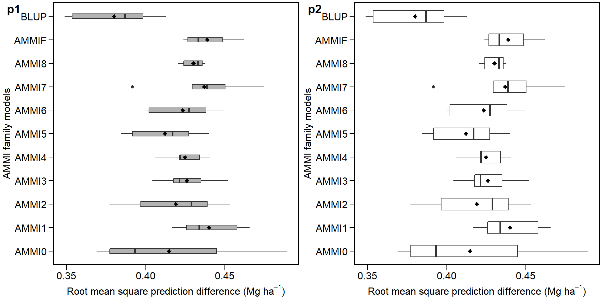

Cross-validation procedures for AMMI and BLUP
Source:vignettes/vignettes_CROSS-VALIDATION.Rmd
vignettes_CROSS-VALIDATION.RmdGetting started
A dataset called data_ge is provided to make reproducible examples. For more information, please, see ?data_ge. Other data sets can be used provided that the following columns are in the dataset: environment, genotype, block/replicate and response variable(s).
Predictive accuracy
The predictive accucary of both AMMI and BLUP models may be obtained using a cross-validation procedure implemented by the functions validation.AMMIF() and validation.blup() The validation.AMMIF() function provides a complete cross-validation procedure for all member of AMMI model family (AMMI0-AMMIF) using replicate-based data, according to the diagram below:  Automatically the first validation is carried out considering the AMMIF (all possible axis used). Considering this model, the original data set is split up into two sets: training set and validation set. The training set has all combinations (genotype x environment) with the number of replications informed in
Automatically the first validation is carried out considering the AMMIF (all possible axis used). Considering this model, the original data set is split up into two sets: training set and validation set. The training set has all combinations (genotype x environment) with the number of replications informed in nrepval argument. The validation set has one replication that were not included in the training set. The splitting of the data set into training and validation sets depends on the design considered. For a Randomized Complete Block Design (default option) and the procedure we used in the article, completely blocks are randomly selected within environments, as suggested by Piepho (1994). The remaining block serves as validation data. If design = "CRD" is informed, thus declaring that a completely randomized design was used, single observations are randomized for each treatment (genotype-by-environment combination). This is the same procedure suggested by Gauch and Zobel (1988). The estimated values for each member of the AMMI model family in each re-sampling cycle are compared with the observed values in the validation data. Then, the Root Mean Square Prediction Difference is computed as follows:
\[ RMSPD = {\left[ {\left( {\sum\nolimits_{i = 1}^n {{{\left( {{{\hat y}_{ij}} - {y_{ij}}} \right)}^2}} } \right)/n} \right]^{0.5}} \]
where \(\widehat{y}_{ij}\) is the model predicted value; and \(y_{ij}\) is the observed value in the validation set. The number of random selection of blocks/replicates (n) is defined in the argument nboot. At the end of the n cycles for all models, a list with all estimated RMSPD and the average of RMSPD is returned.
The function validation.blup provides a cross-validation of replicate-based data using mixed models. By default, complete blocks are randomly selected for each environment. The procedure for computing the RSME is identical to the above function.
The following code computes the cross-validation of the oat data set that, for simplicity, will use 200 re-sampling procedures. I suggest using a larger number, say, 1000.
AMMIweat = validation.AMMIF(dataset,
resp = GY,
gen = GEN,
env = ENV,
rep = REP,
nboot = 200,
nrepval = 2)
# cross-validation for BLUP model
BLUPweat = validation.blup(dataset,
resp = GY,
gen = GEN,
env = ENV,
rep = REP,
nboot = 200,
nrepval = 2)A progress bar is shown by default (the examples are below). Thus, it is possible to verify the status of the cross-validation process. If necessary, the progress bar can be disabled by informing the argument progbar = FALSE in the function.

Progress bar for AMMI model family cross-validation process.

Progress bar for BLUP cross-validation process.
Printing the means of RMSPD estimates
All outputs shown in tables were laid out using the R package kableExtra. The pdf file of this package can be found here.
options(digits = 4)
RMSEweat = rbind(AMMIweat$RMSPDmean, BLUPweat$RMSPDmean)
RMSEweat = dplyr::mutate(RMSEweat, CROP = "Wheat")
RMSEweat = RMSEweat[order(RMSEweat$mean, decreasing = F),]| MODEL | mean | CROP |
|---|---|---|
| BLUP | 0.4074 | Wheat |
| AMMI2 | 0.4123 | Wheat |
| AMMI3 | 0.4130 | Wheat |
| AMMI4 | 0.4182 | Wheat |
| AMMI5 | 0.4193 | Wheat |
| AMMI8 | 0.4260 | Wheat |
| AMMIF | 0.4260 | Wheat |
| AMMI6 | 0.4261 | Wheat |
| AMMI7 | 0.4261 | Wheat |
| AMMI1 | 0.4308 | Wheat |
| AMMI0 | 0.4334 | Wheat |
The results shown above are the means of the 1000 RMSPD estimates for each tested model and are presented from the most accurate model (smallest RMSPD value) to the least accurate model (highest RMSPD value).
We can print the result from RMSPDweat in basically two distinct ways. First, printing the results in the R environment using print(RMSPDweat) (this is not a good idea since we probably will need work with these results). The second option is to export the results to an editable file, such as a .csv, or .xlsx file. We have R packages that facilitate this procedure. Let’s do it. For example, to export the results to a .csv file, the command to be run is: utils::write.csv(RMSPDweat, file = "myfile.csv"). This command will create a .csv file called “myfile” in the R directory. To export the results to a .xlsx file, the package xlsx is needed. After properly installed, the command will be then xlsx::write.xls(RMSPDweat, file = "myfile2.xlsx").
Plotting the RMSPD values
The values of the RMSPD estimates obtained in the cross-validation process may be plotted using the functionplot() may be used.
# binding AMMI and BLUP RMSPDs
RMSPDweat = bind_val(AMMIweat, BLUPweat)
# Plotting the RMSPD values
p1 = plot(RMSPDweat)
p2 = plot(RMSPDweat, width.boxplot = 0.5, col.boxplot = "transparent")
plot_grid(p1, p2, labels = c("p1", "p2"))
Six statistics are shown in this boxplot. The mean (black rhombus), the median (black line), the lower and upper hinges that correspond sto the first and third quartiles (the 25th and 75th percentiles, respectively). The upper whisker extends from the hinge to the largest value no further than \(1.5\times{IQR}\) from the hinge (where IQR is the inter-quartile range). The lower whisker extends from the hinge to the smallest value at most \(1.5\times{IQR}\) of the hinge. Data beyond the end of the whiskers are considered outlying points. If the condition violin = TRUE, a violin plot is added along with the boxplot. A violin plot is a compact display of a continuous distribution displayed in the same way as a boxplot.
References
Gauch, H.G, and Zobel R.W. 1988. “Predictive and Postdictive Success of Statistical Analyses of Yield Trials.” Theor. Appl. Genet. 76 (1): 1–10. doi:10.1007/BF00288824.
Piepho, H.P. 1994. “Best Linear Unbiased Prediction (Blup) for Regional Yield Trials: A Comparison to Additive Main Effects and Multiplicative Interaction (Ammi) Analysis.” Theor. Appl. Genet. 89 (5): 647–54. doi:10.1007/BF00222462.